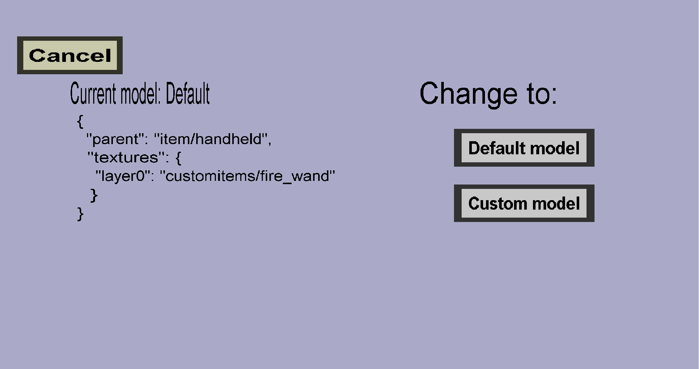

The item model edit menu can be used to view and edit the model of a custom item. Item models are a minecraft resource pack feature that makes it possible to customize the appearance of an item more than just changing its texture. This menu should look like this:
The current model of the custom item is shown on the left. If you haven't chosen a custom model (yet), this will show the default item model that this plug-in is going to use. (Except when you are viewing a custom 3d helmet, which is not allowed to have a default model.) You can use the buttons on the right to change the model of the custom item.